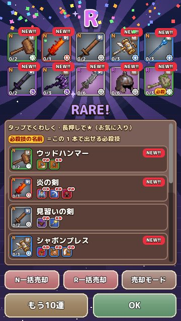

レア度の段階と見分け方
N から MR まで 17 段あるレア度の並びと色、「+」の意味、世界ごとに手に入るレア度の範囲と攻撃力の目安を表で解説します。 更新：2026-11-23
レア度は N から MR までの 17 段
キシドラ！の武器と盾には、すべてレア度がついています。いちばん下の N から始まり、今遊べる地上・地底・海底・天空の 4 つの世界をあわせると、いちばん上の MR まで 17 段あります。レア度は、品の名前の下の「N」「SR+」のような字と、その字の色、宝箱の絵、ガチャで出たときの演出の言葉で見分けられます。図鑑のカードのふちも、品のレア度の色になっています。
| 並び | レア度 | 色 | ガチャの言葉 |
|---|---|---|---|
| 1 | N | 灰色 | GET! |
| 2 | N+ | 明るい灰色 | GET! |
| 3 | R | 青 | RARE! |
| 4 | R+ | 水色 | RARE! |
| 5 | SR | 山吹色 | SUPER RARE!! |
| 6 | SR+ | ピンク | ULTRA RARE!!! |
| 7 | SSR | オレンジ | SUPER SPECIAL RARE!!! |
| 8 | SSR+ | 赤 | SUPER SPECIAL RARE!!! |
| 9 | UR | 紫 | ULTIMATE RARE!!!! |
| 10 | UR+ | うすい紫 | ULTIMATE RARE!!!! |
| 11 | USR | 空色 | ULTIMATE SUPER RARE!!!! |
| 12 | USR+ | うすい空色 | ULTIMATE SUPER RARE!!!! |
| 13 | LR | 金 | LEGEND RARE!!!!! |
| 14 | LR+ | うすい金 | LEGEND RARE!!!!! |
| 15 | LSR | 緑 | LEGEND SUPER RARE!!!!! |
| 16 | LSR+ | うすい緑 | LEGEND SUPER RARE!!!!! |
| 17 | MR | 白 | MYTHIC RARE!!!!!! |
ガチャの言葉の「!」の数は、レア度が上がるほど増えていきます。10 連で「!」がたくさん並んだら当たりのしるしです。持ち物や装備の一覧は「レア度」の順に並べかえられるので、たくさん集まってきたら並べ方をレア度にすると、強い品がすぐ見つかります。


「+」の意味
名前に「+」がつくレア度（N+・R+・SR+・SSR+・UR+・USR+・LR+・LSR+）は、もともと「+」のないレア度の品を進化させて 1 段上がった品のための段です。たとえば地上では、敵の落とす宝箱からもガチャからも出てくるのは N・R・SR だけで、N+・R+・SR+ の品はふつう進化でしか手に入りません。ナイトソード（N）を進化させるとパラディンソード（N+）、ドリランス（SR）を進化させるとドリルスパイク（SR+）になる、という具合です。
SSR から上では、「+」の段の次がまた「+」のない段になります。SSR+ を進化させると UR、UR+ を進化させると USR、USR+ を進化させると LR、LR+ の次は LSR、LSR+ の次は MR です。つまり、UR・USR・LR・LSR・MR の品の多くは、「+」の品をもう 1 段育てた先にあります。
1 本の武器でこの並びをたどる例が、竜剣の鎖です。ドラゴンスレイヤー（R）→ 竜剣ドラゴルム（R+）→ 竜剣ドラゴード（SR）→ 竜剣ドラグルド（SR+）→ 竜剣ドラ・ド・ラド（SSR）→ 竜剣ドラガイア（SSR+）→ 覇竜ドラゴライズ（UR）と、進化のたびに 1 段ずつ上がり、R から UR まで 7 つのレア度を通ります。

例外もあります。海底では UR+ の武器がはじめの段で、敵やガチャから直接出てきます。また、10 連のごほうびの「最高レア確定チケット」では、地上なら SR+ の武器が直接もらえます（ショップとガチャ）。
世界ごとに手に入るレア度
どのレア度の品が手に入るかは、世界によって決まっています。先の世界ほど上のレア度が出ますが、盾だけは世界ごとに守り方が変わるので、どの世界でも N からの集め直しです。
| 世界 | 敵とガチャの武器 | その世界の最高（確定チケット） | 盾 |
|---|---|---|---|
| 地上 | N・R・SR | SR+ | N〜SR+（タップの盾） |
| 地底 | SSR | UR | N〜UR（フリックの盾） |
| 海底 | UR+（ガチャは USR も） | LR | N〜LR（ホールドの盾） |
| 天空 | USR（ガチャは LR・LSR も） | MR | N〜MR（スワイプの盾） |
地上の品の中にも、竜剣の鎖のように、地底以降に行けるようになってから SSR や UR まで進化できるものがあります。進化先が先の世界のレア度になる「つなぎ」の進化は、その世界に行けるようになるまで進化のボタンが押せません（鍛冶屋の使い方）。

レア度と攻撃力の目安
レア度が上がるほど、武器の攻撃力の幅も上がっていきます。各世界の武器の ATK のおおよその幅は次のとおりです（素材の品をのぞく）。
| 世界 | レア度と ATK の幅 |
|---|---|
| 地上 | N 40〜65、N+ 60〜90、R 40〜101、R+ 70〜125、SR 70〜150、SR+ 118〜218 |
| 地底 | SSR 170〜225、SSR+ 215〜280、UR 280〜325 |
| 海底 | UR+ 350〜380、USR 410〜440、USR+ 480〜515、LR 630〜660 |
| 天空 | USR 445〜455、USR+ 525〜535、LR 665〜690、LR+ 700〜740、LSR 780〜820、LSR+ 860〜900、MR 980〜1,015 |
世界の切れ目の数字にも注目してください。地上の SR+ のいちばん上（ATK 218）と、地底の SSR のいちばん下（ATK 170）は、ほとんど同じ強さです。地底に着いたばかりのときは、よく育てた地上の SR+ の武器でも十分に戦えるので、あわてて全部を入れかえる必要はありません。同じように、地底の UR（280〜325）の次に海底の UR+（350〜380）が、海底の LR（630〜660）の少し上に天空の LR（665〜690）が続いていて、世界をまたいでも段はなめらかにつながっています。
地上の表を見ると、R と SR の幅が大きく重なっているのが分かります。地上の武器は、同じレア度の中でも「攻撃力は低いがスタンが高い」「攻撃力は高いがスタンが 0」のように性格が分けられているからです。たとえば SR のドラゴンガラガラ（剣）は ATK 80 しかありませんが、スタンは 40 もあり、ドラゴンに威力 150% の効果も持っています。レア度は「強さの目安」であって、「どの STAGE でも上が勝つ」わけではありません。敵の弱点の種類の武器で攻撃するとダメージは 1.5 倍、スタンは 5 倍たまるので、弱点に合った 1 段下の武器のほうが活躍する場面はよくあります（弱点とスタンのしくみ）。
盾は、レア度が上の盾が下の盾に DEF と HP の両方で負けないように作られています。盾についてはレア度をそのまま強さの順と考えてかまいません（盾の選び方と DEF の見方）。
レア度で変わる、強化・値段
レア度は強さのほかに、強化のスロットの数と売値も決めています。
- 強化のスロット：N・N+ は 0〜4、R・R+ は 2〜6、SR・SR+ は 4〜9、SSR・SSR+ は 6〜9 マスで、UR から上ははじめから 9 マスです。上のレア度ほど強化の伸びしろも大きくなります
- 売値：N の 75 コインから、SR+ で 7,500、UR で 62,500、MR では 2,500,000 コインになります。名前や強化に関係なく、レア度だけで決まります（コインと素材の集め方）
持って行けるレア度に上限がある場所
ゲームの中には、持って行ける装備のレア度が決まっている場所があります。代表的なのが各世界の蜃気楼のダンジョンで、地上の蜃気楼の斜塔は SR+ まで、地底の蜃気楼の洞窟は UR まで、海底の蜃気楼の沈没船は LR まで、天空の蜃気楼の暗雲は MR までの装備でしか挑めません（蜃気楼のダンジョン）。物語の先にある特別な場所の中にも、同じように上限が決まっている所があります。
上限より上の装備を付けたまま出発しようとすると、出発の準備の画面に赤い字で「○○までの装備でしか挑めない」と出て、「開始」のボタンが灰色になります。メイン・サブ・盾・借りる武器のどれか 1 つでも上限をこえていると出発できません。「おすすめ」のボタンや借りる武器のリストは、はじめから上限までの品だけで選んでくれるので、困ったら押してみてください（装備セットとおすすめ装備）。
よくある勘違い
- 「+」は強化の印？：ちがいます。名前の後ろの「+3」のような数字は強化で埋めたマスの数、レア度の「SR+」の「+」は進化の段です
- SR+ は SR より必ず強い？：同じ武器を進化させた場合はそのとおりですが、別の武器同士では、攻撃力や効果の組み合わせでいくらでも逆転します
- 先の世界のガチャを引けば全部強い？：地底から先のガチャは盾の割合が多く、武器が出る割合はそれほど高くありません。武器はボスの初回の品や宝箱も合わせて集めましょう